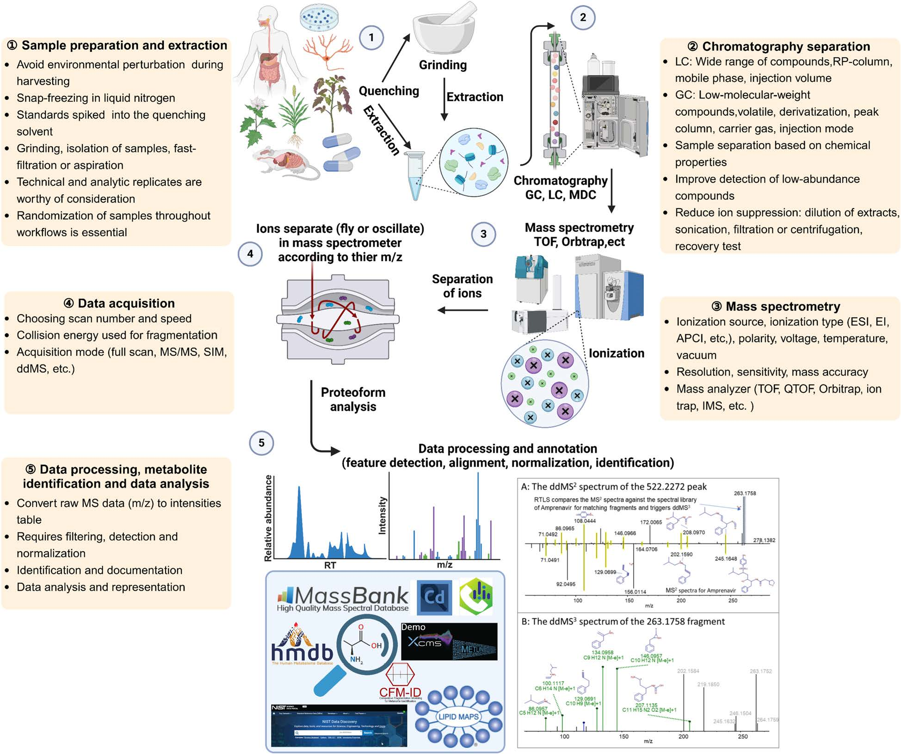
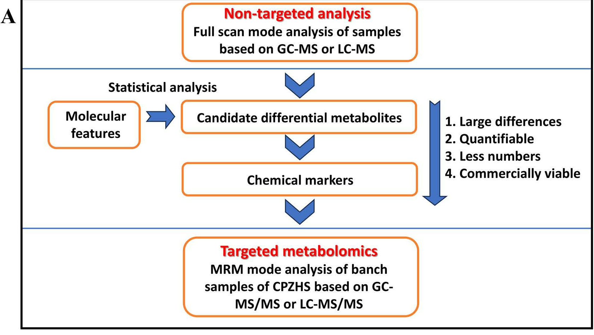
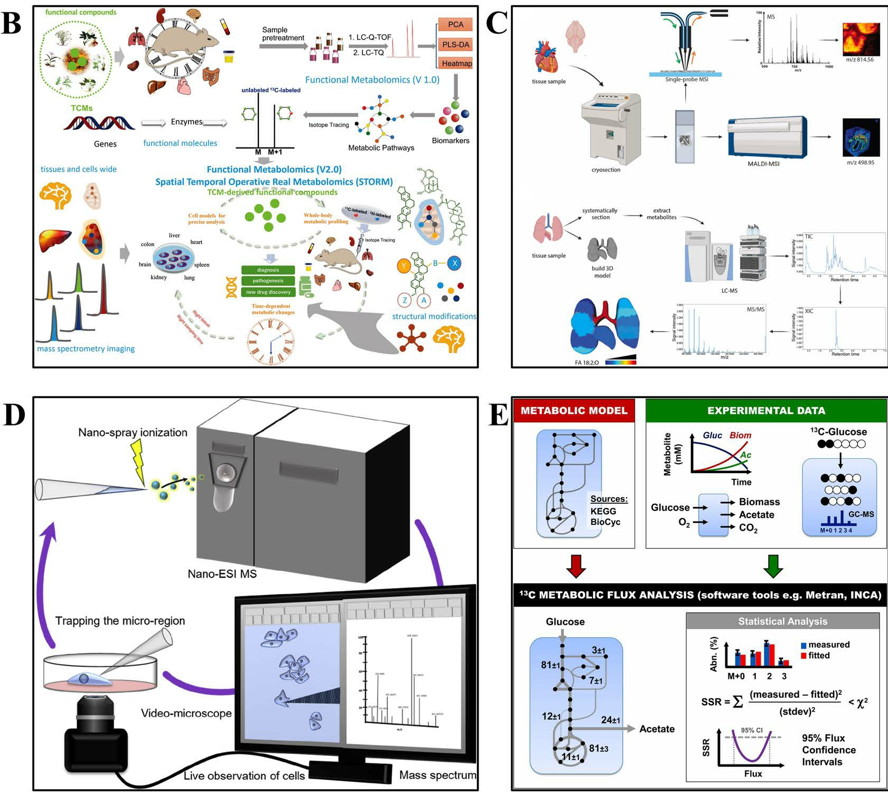

基于质谱的代谢组学方法在中药中的应用
杨尚毅
概述
研究背景
- 多成分、多靶点、多途径协同作用
- 体现中药整体性与复杂性
代谢组学分析简介
分析方法
流程简述
流程简述
- 样本制备：全面提取代谢物
- 分离技术：降低质谱数据复杂度
- 质谱分析：获取全谱代谢物信息
- 技术协同：提升检测灵敏度与数据深度
样品制备
- 核心目标：富集目标代谢物，去除干扰杂质
- 主流方法：固液萃取(SLE)、液液萃取(LLE)
- 极性代谢物：水/甲醇/乙腈+甲酸添加剂
- 非极性代谢物：二氯甲烷、氯仿等非极性溶剂
- 关键步骤：低温处理抑制酶活，离心去除蛋白沉淀
质谱-色谱联用分离纯化
质谱-色谱联用分离纯化
LC与多维色谱的比较与应用
- 液相色谱
- 优势：无需衍生化，适用化合物范围广
- 反相色谱：中等极性至非极性化合物，水-有机相流动相
- 亲水作用色谱：极性化合物，高比例有机相流动相
- 多维色谱
- GC×GC：双柱正交分离，适用于挥发油等复杂体系
- LC×LC：机制互补，提升非挥发性成分分离度
MS技术

MS技术
电离技术
- 原理： 高能电子束轰击气态样品分子，使其电离并发生特征性碎裂。
- 特点： 产生丰富的碎片离子，提供丰富的结构信息；谱库匹配度高。
- 适用： 常与GC-MS联用，适用于挥发性、热稳定性化合物的分析。
- 原理： 样品溶液在高压电场下雾化生成带电液滴，经去溶剂化过程形成气相离子。
- 特点： 软电离技术，易于产生多电荷离子，适用于大分子分析；主要生成准分子离子，能较好保持分子结构完整性。
- 适用： 常与LC-MS联用，广泛应用于极性、热不稳定及难挥发化合物，如蛋白质、多肽及代谢物。
MS技术
质量分析器
- 特点： 成本较低，操作简便，扫描速度快，适合常规筛查与定量。
- 常见类型： 四极杆 (Q)、离子阱 (IT)。
- 应用： 已知代谢物的快速筛查与相对定量。
- 特点： 能够提供精确质量数（通常 < 5 ppm），可推导元素组成，具备高分辨率和高质量精度，有利于未知物鉴定。
- 常见类型： 飞行时间 (TOF)、轨道阱 (Orbitrap)、傅里叶变换离子回旋共振 (FT-ICR)。
- 应用： 适用于复杂体系（如中药成分分析）中化合物的精确鉴定、未知代谢物识别与结构解析。
数据采集与处理
数据采集模式
原理：
在全扫描（MS1）中检测离子强度，自动选取丰度最高的离子进行二级质谱（MS2）碎裂分析。优势：
目标明确，可获得高质量的二级质谱图。局限性：
易忽略低丰度离子，数据重现性较差。
原理：
不依赖MS1强度，预设多个连续质量窗口，对窗口内所有离子进行MS2碎裂。优势：
覆盖全面，重现性高，适合复杂样本的整体分析。局限性：
数据处理复杂，对计算资源要求高。
数据处理与分析
代谢组学技术的分类


- 传统上分为靶向与非靶向代谢组学。
- 新兴方向包括：功能代谢组学、空间代谢组学、单细胞代谢组学（SCM）与代谢流分析（MFA）。
靶向 vs. 非靶向代谢组学
- 针对已知代谢物进行精准定量，通常基于MS/MS技术，具备高灵敏度和准确性。
- 适用于验证生物学假设，探究代谢物在生理与病理过程中的作用，如疾病标志物识别。
- 局限在于覆盖范围有限，无法全面反映样本代谢组成。
- 采用探索式策略，全面分析样本代谢物，依赖高分辨率质谱（HRMS），如TOF、Orbitrap、IMS。
- 覆盖广，有助于新标志物发现和未知代谢途径解析，广泛应用于中药复杂代谢谱研究。
- 通量高、覆盖广，但定量准确性低于靶向方法。
实践中常整合两类方法，以实现高精度与广覆盖的平衡。
功能代谢组学
空间代谢组学与单细胞代谢组学
- 在组织或细胞原位分析代谢物空间分布，揭示其异质性。
- 基于质谱成像（MSI）等技术，可视化代谢物位置与浓度，关键于理解疾病局部代谢改变。
- 在中药研究中，用于分析成分在组织中的吸收、分布、代谢与排泄（ADME），及对局部代谢微环境的影响。
- 聚焦单细胞内代谢物，突破传统批量分析对细胞异质性的掩盖。
- 借助高灵敏质谱，揭示细胞间代谢差异，深化对细胞功能、疾病机制及药物异质响应的认知。
- 在中药研究中，用于探索中药对不同细胞类型的特异性效应，阐明其单细胞水平的作用机制。
代谢流分析（MFA）
- 用于量化活细胞或体内代谢途径的通量，即代谢物转化速率。
- 基于稳定同位素标记（如¹³C、¹⁵N），追踪标记原子在代谢网络中的流向，推算代谢通量。
- 揭示代谢网络的动态调控，解析细胞如何适应生理或病理状态。
- 阐明中药对细胞代谢通量的影响，揭示其对代谢途径的调控机制。
- 例如，研究中药对糖酵解、三羧酸循环等核心代谢通路的影响，为理解中药作用提供动态视角。
代谢组学在TCM中的应用
化学成分表征
靶点识别
- 功能代谢组学整合代謝组学与功能验证，不仅实现代謝物检测与定量，更深入探索其在信号通路中的生物学功能。
- 雷公藤红素的抗炎机制：研究表明，Celastrol通过抑制炎症通路中的关键酶与转录因子，发挥抗炎作用。
- 靶点鉴定：基于质谱的蛋白组与代谢组学技术可鉴定Celastrol相互作用的蛋白或代谢物，明确其作用靶点。
- 通路分析：分析Celastrol影响的代谢通路，揭示其抗炎作用的复杂调控网络。
作用机制（MoA）
中医证候研究
- 代谢组学为中医证候研究提供新途径，通过识别证候相关代谢谱，推动证候客观化与生物标志物发掘。
- 冠心病证候生物标志物：代谢组学研究识别出冠心病不同证候（如气虚血瘀、痰浊阻络）相关的特异性代谢物，助力证候精准诊断与个体化治疗。
总结
机遇与展望
将代谢组学整合到中医药研究中，是连接传统智慧与现代科学的关键桥梁，为中医药的现代化和国际化提供了全新范式。
加速临床转化
对接国际标准
促进全球合作
未来的挑战
尽管前景广阔，代谢组学在中医药领域的深入应用仍面临一系列技术瓶颈与数据障碍。核心挑战在于数据质量与注释能力。
- 鉴定环节存在主观性：代谢物注释严重依赖专家经验，缺乏标准化流程。
- 技术局限性：质谱数据库覆盖度有限，且碰撞诱导解离能量不足常导致碎片离子信息不完整，严重影响鉴定准确率。
- 数据库更新与维护滞后：KEGG、HMDB、TCMSP、TCMID等核心数据库普遍存在数据缺失、条目陈旧、信息不一致等问题，难以支撑中药复杂体系的高通量研究。
感谢聆听 欢迎提问与交流
汇报人： 杨尚毅
感谢各位老师与同学的宝贵时间
期待您的宝贵意见与建议